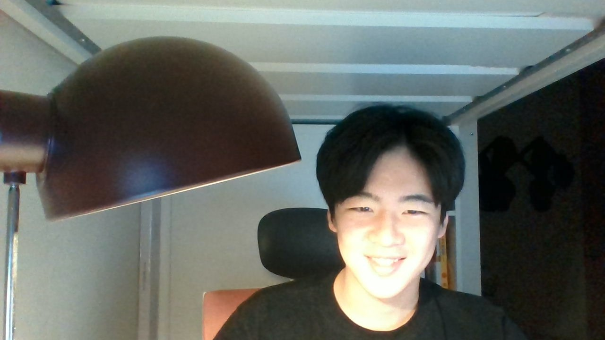

최재승의 2020-1학기는 어땠는가?
유럽에 다녀오고 코로나 핑계로 휴학했습니다. 지난 2학기에 모아뒀던 돈으로 용돈을 적게 받으면서도 풍족한 생활을 할 수 있었습니다. 더 나아가 제 기준에 적지 않은 돈을 주식에 투자하였습니다. 결국 주식투자는 제 2020-1학기에 메인 주제가 되었습니다. 덕분에 금융에 관심이 생겼습니다.
금융에 대해 더 배우고 싶어지는 학기였습니다. 하지만 금융만 배운다면 좋은 강점이 될 수 없을거 같아 ict융합전공을 고려 중입니다.
